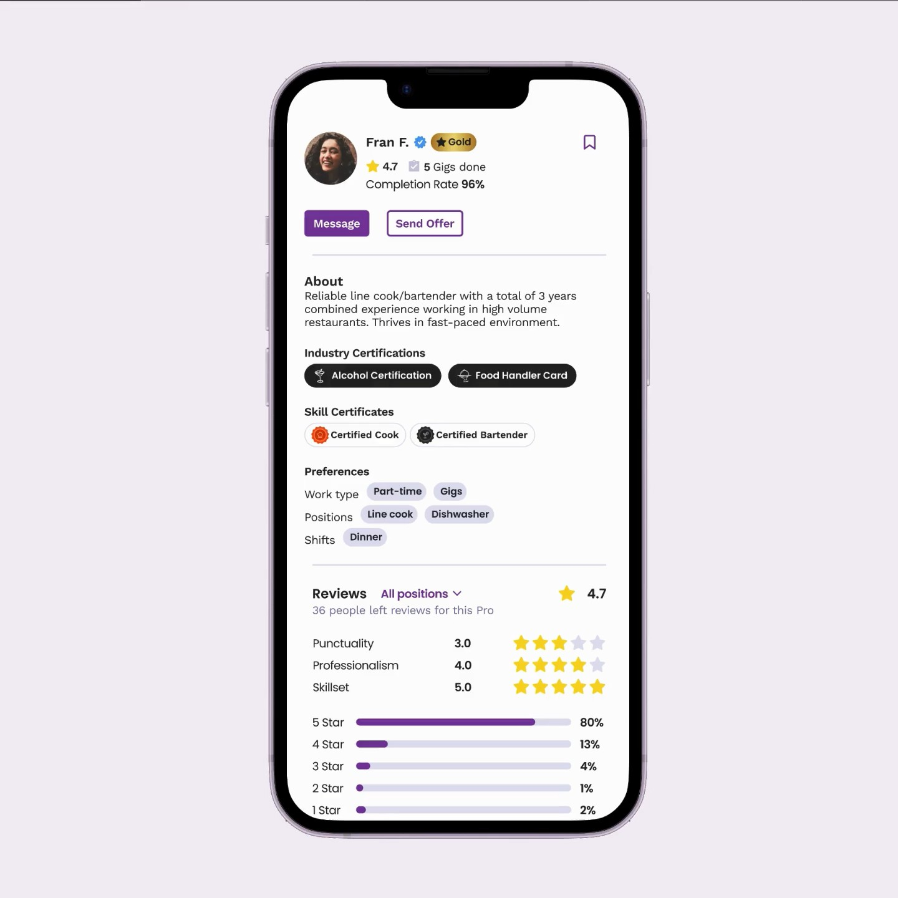

Gigpro → Qwick
Rebuilding trust in a staffing marketplace
An open hospitality-staffing marketplace optimized for speed but gave businesses too little confidence in who they were hiring. I led a staged strategy that established qualification standards, made quality visible, and applied trust signals to better fulfillment.
Problem & Insight
Gigpro, now Qwick, helps hospitality businesses fill on-demand shifts fast. But the open marketplace gave businesses little confidence in a Pro’s qualifications, professionalism, or reliability before hiring, and no-shows, late cancellations, and inconsistent quality were eroding trust on both sides.
Optimized for speed, not certainty: businesses could reach applicants fast, but had little basis to tell qualified, reliable Pros apart.
A survey of churned business accounts confirmed the pattern: the top reasons cited for leaving were insufficient training or professionalism, unpredictable quality, and low confidence a Pro would show up.
View the full churn survey breakdown
| Reason cited for leaving | Count | Percentage |
|---|---|---|
| Insufficient training or professionalism | 10 | 45.5% |
| Unpredictable quality | 5 | 22.7% |
| Walkouts or last-minute cancellations | 4 | 18.2% |
| Low confidence that a Pro would show up | 2 | 9.1% |
| Limited ability to screen or train Pros | 1 | 4.5% |
The problem was not applicant volume. It was confidence.
Businesses lacked the signals to assess whether a Pro was qualified and reliable before extending an offer, and qualified Pros had limited ways to stand out.
Strategy
The response moved in three stages, each building the evidence the next one relied on.
onboarding and profiles
certifications, ranks, performance
Connect, Direct Offers, Automatch, Match
Solution
1. Establishing a credible qualification baseline
An audit found a weak baseline: nearly anyone could join and apply, and the only required fields were a short bio and photo. I redesigned onboarding to require availability, work preferences, experience, skills, an orientation, and a readiness assessment before a Pro could apply for shifts — turning a thin profile into a structured, comparable one businesses could actually evaluate.
Before

After

Structured onboarding data carried straight into the business-facing selection card, giving businesses consistent information to compare applicants.
2. Making quality visible at selection
A stronger baseline still needed to be legible in the moment of choosing a Pro. Three signals did that work, each answering a different question: skill certifications show whether a Pro can perform a specific skill, Pro Ranks (Bronze–Gold) show whether they’ve performed reliably over time based on shift volume, ratings, and a clean record, and industry certifications confirm a Pro meets a business’s or a gig’s specific compliance requirement. Together they let a business tell “capable,” “proven,” and “eligible” apart at a glance.


3. Using trust signals to improve fulfillment
With reliable signals in place, the platform could do more than display them. It could help businesses act on trusted relationships, make faster decisions with data-informed recommendations, and eventually support fulfillment directly while preserving business oversight.
From relationships to fulfillment
Connect gave businesses a dedicated place to find, save, and organize Pros they had worked with. Previously, once a shift ended, businesses could not reconnect with a Pro through chat, so rehiring someone who had worked out meant waiting and hoping they applied again. With Connect, businesses could browse past Pros by position and narrow the list with filters.
Direct Offers let businesses share a shift directly with selected Pros or groups from that trusted network, rather than posting immediately to the open marketplace. Pros could confirm the shift directly, without applying and waiting for a business to review them. The first Pro to confirm secured the roster spot.
Recommended Pros brought those signals into the selection experience. A ranked shortlist appeared above the general applicant pool, using completion rate, Pro Rank, and relevant certifications to help operators identify strong candidates quickly. Businesses could send offers to selected Pros individually or share the shift with the full recommended group.
Automatch tested a more platform-led fulfillment model. If a business had not made enough selections by a review point, Automatch could send offers to matched Pros to help ensure the shift was filled. Businesses received a reminder to review the queue and could still remove candidates before offers were sent. Early results showed that platform-selected Pros had higher completion rates and stronger business ratings than manually selected Pros.
Together, these capabilities created the foundation for Match, the platform’s algorithmic fulfillment model. Match brought qualification, availability, performance, and relationship signals together to fill shifts more reliably, while still allowing businesses to review selections, remove Pros, or send Direct Offers when they needed more control.
Businesses could trust Match to fill a shift while retaining the option to review selections, remove Pros, or send direct offers.
Impact & Reflection
The metrics at the top of this case study reflect internal marketplace reporting across [insert applicable market, user cohort, and measurement period]; they represent marketplace-level outcomes following a combination of qualification, onboarding, and selection changes rather than the effect of a single feature. [Replace with approved measurement methodology or confidentiality language.]
Trust wasn’t restored by one feature. It was built into the data captured at onboarding, the signals shown at the moment of selection, and the fulfillment system itself, each stage giving the next one something more reliable to work with. The result was a marketplace both sides could rely on more: businesses spent less time sorting applicants, and qualified Pros had clearer ways to stand out.
Other Works